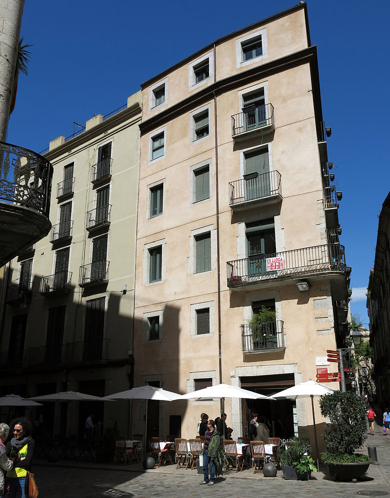

Confesso una certa nostàlgia cap a aquella plaça de l'Oli on vaig néixer, i no em fa vergonya dir que rebria amb gran plaer la notícia que l'ajuntament posés una placa, per petita i discreta que sigui, a la façana de la casa on la meva mare em va parir. Això em faria feliç, perquè sense ella sóc un arbre amb moltes branques sense cap arrel concreta.
- Yo Cugat. Mis primeros ochenta años (1981)
De Girona recordo molt poc, si no és la intimitat d'aquella plaça on passava llargues hores del dia i que em semblava meva.
- Yo Cugat. Mis primeros ochenta años (1981)
